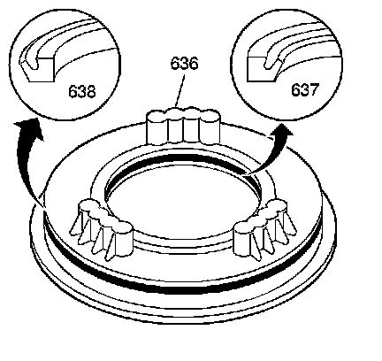
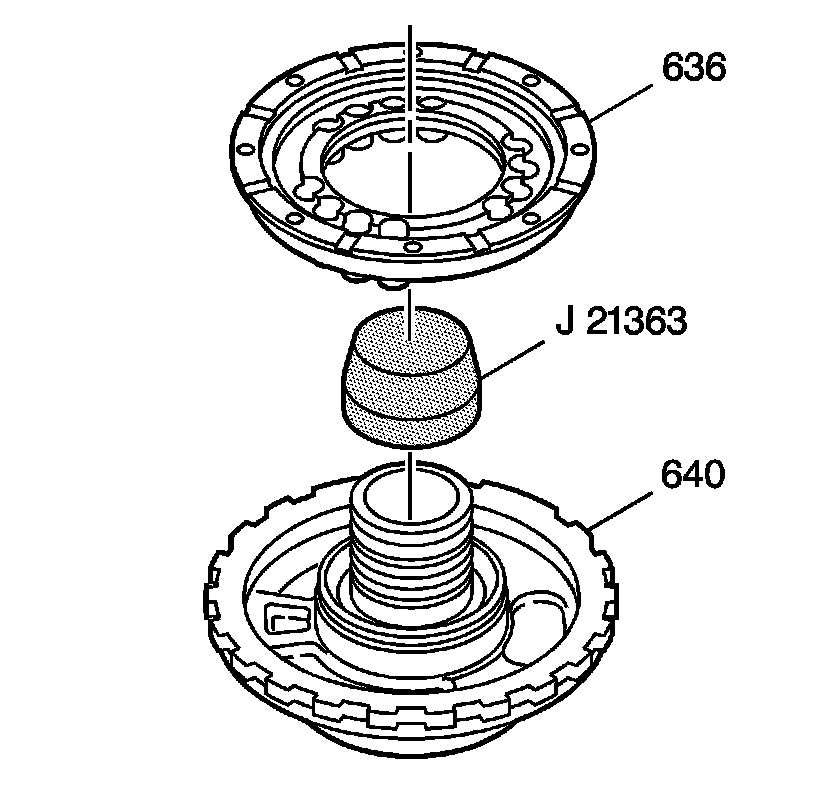
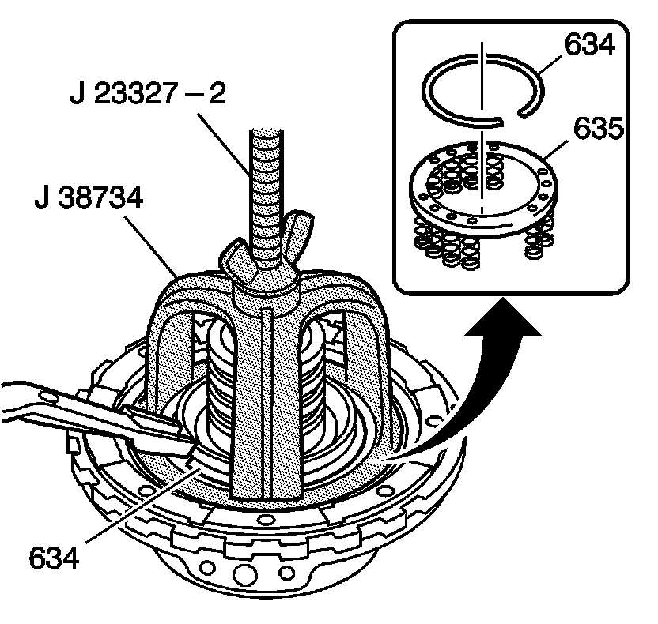
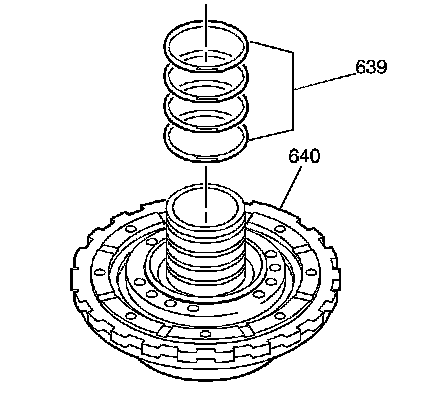

Center Support Assembly Assemble
Center Support Assembly Assemble
Tools Required
^ J 21363 Intermediate Clutch Inner Seal Protector
^ J 23327 Clutch Spring Compressor
^ J 36850 Transjel(R) Lubricant
^ J 38734 Intermediate Spring Compressor Adapter

1. Install the oil cooler pipe fitting seal (690) into the center support assembly (640).

2. Lubricate the new inner (637) and outer (638) intermediate clutch piston seals, and the seal pockets in the intermediate clutch piston (636) with DEXRON(R)VI transmission fluid.
3. Install the inner (637) and outer (638) intermediate clutch piston seals onto the intermediate clutch piston (636) with the seal lips facing away from the spring pockets.

4. Using the J 21363, install the intermediate clutch piston (636) onto the center support assembly (640). Use a fine feeler gauge blade to assist with installing the piston outer seal.
5. Remove the J 21363.

6. Install the intermediate clutch spring assembly (635). Align the springs with the pockets in the intermediate clutch piston.
7. Using the J 38734 and the J 23327, install the intermediate clutch spring retainer ring (634).
8. Remove the J 38734 and the J 23327.

Notice: Do not overexpand the oil seal rings. Damage to the rings may result.
9. Install the new direct clutch housing oil seal rings (639) onto the center support assembly (640).
10. Use J 36850 or equivalent in order to keep the oil seal rings in place.